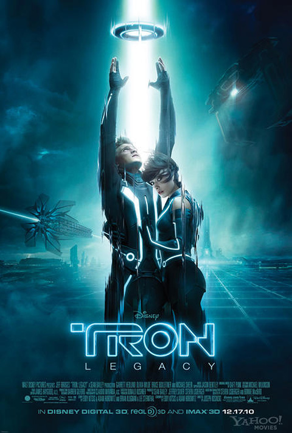

|  |
Diretor: Joseph Kosinski Com: Garrett Hedlund, Jeff Bridges, Olivia Wilde Gênero: Ação/Sci-Fi - Legendado/Dublado Censura: 10 Lançamento: 17 de dezembro de 2010 Tempo de duração: 125 minutos Sinopse: Sam, filho do famoso programador de jogos de computador Kevin Flynn, é assombrado há muito tempo pelo misterioso desaparecimento do pai. Um sinal estranho leva Sam ao fliperama de Flynn, onde é puxado para dentro de um mundo cibernético, o mesmo em que seu pai está preso há 20 anos. Sem receio, o guerreiro Quorra, Kevin e Sam procuram escapar de um universo que, embora magnífico, é muito mais avançado e perigoso do que Kevin tinha imaginado. Assistir |
 Entrou com: fulano@gmail.com || Sair
Entrou com: fulano@gmail.com || Sair